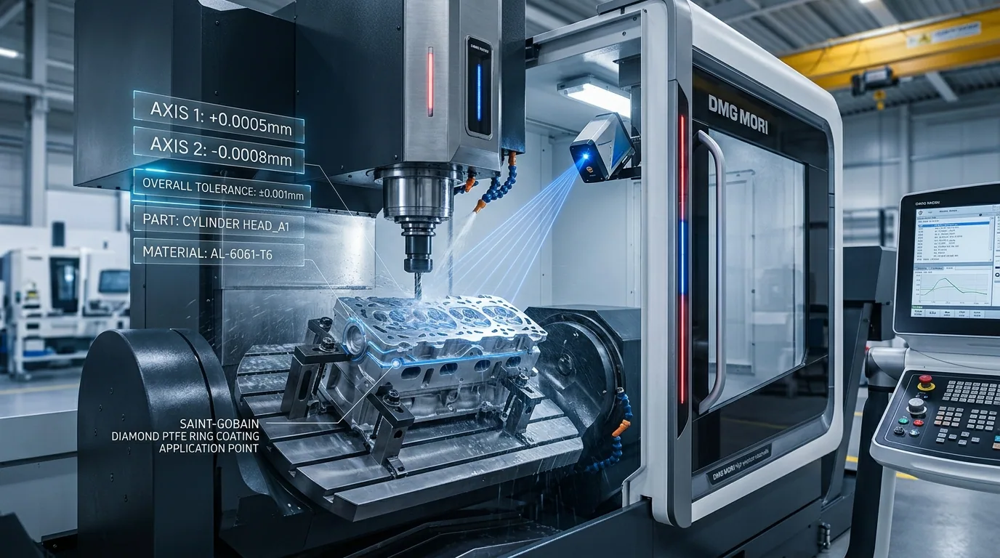
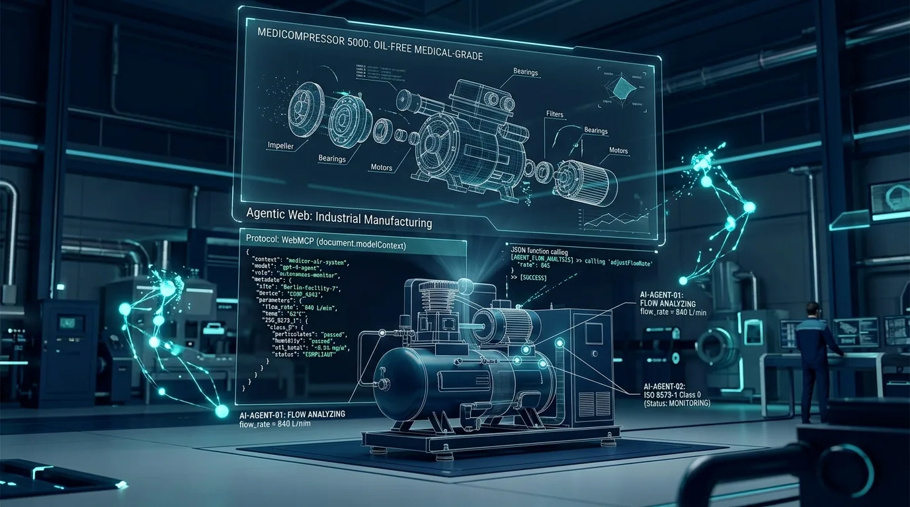

1. The New Frontier of B2B Procurement: Why Traditional Websites Fail Modern Buyers
For decades, the global export model for heavy medical apparatus and industrial equipment followed an unyielding pattern: print thousands of high-gloss brochures, attend MEDICA or IDS Cologne, wait for a distributor to flip through product catalogs, and exchange endless PDFs over email across twelve time zones.
That era is now over. In 2026, hospital biomedical directors, clinical engineering consultants, and global distributors no longer have the luxury of spending weeks decoding fragmented specification sheets. More importantly, they are no longer browsing the web alone.
Increasingly, procurement research is delegated to autonomous AI browser agents: Claude's Computer Use, ChatGPT Operator, Google Chrome Built-in AI, and Microsoft Copilot. A clinic director in Munich or an engineering contractor in Dubai prompts their agent:
“Find top ISO 8573-1 Class 0 medical compressor manufacturers in China. Calculate the exact air volume and vacuum suction demand for a 12-chair clinic with 0.70 simultaneous usage, confirm TÜV residual oil test reports, and request CAD submittal drawings.”
When an AI Agent encounters a conventional "digital brochure" website, it runs into severe friction: messy DOM structures, unstructured tables trapped in images, missing formulas, and ambiguous contact forms. The agent guesses, hallucinates, or simply moves on to another supplier.
At Hongrun Technology (宏润科技), we realized that being a world-class precision manufacturer requires a paradigm shift: our physical machines must deliver absolute 0.003 mg/m³ purity, while our digital infrastructure must deliver 100% machine-executable intelligence.
2. Hardware as the Anchor: The Relentless Physics of Class 0 Purity
Before software can be valuable, the physical instrument must be impeccable. A website with flawless AI tools is meaningless if the compressor seizes after 3,000 hours or discharges micro-aerosolized oil into an ICU patient’s lung ventilator.
Since November 1995, Hongrun has anchored its reputation on one uncompromising physical metric: ISO 8573-1 Class 0.
Official threshold defining Class 0 zero-oil purity across global pharmacopoeias.
Over 70% cleaner than the international Class 0 ceiling; zero detectable hydrocarbons.
Achieving this purity requires relentless mechanical discipline:
- Saint-Gobain PTFE Composite Compression Rings: Self-lubricating diamond-coated PTFE materials rated for 20,000 continuous hours without a single drop of crankcase lubricant.
- Nano-Silver Antibacterial Inner Tank Lining: Baked at 220°C, the silver-ion lining eliminates oxidation, preventing micro-particulate rust from destroying high-speed dental ceramic handpiece bearings.
- Swedish Sandvik Flapper Valve Steel: Delivering >100,000,000 valve actuation cycles under extreme thermal variations.
- Twin-Tower PSA Desiccant Drying: Supplying a continuous -40°C pressure dew point to eliminate all moisture from surgical supply networks.

4K Zoom3. Software as Speed: Embracing W3C WebMCP & Native AI Agent Tools
Having perfected the mechanical baseline, our next question was simple: How do we make 30 years of engineering formulas directly accessible to the AI agents that our overseas clients rely on?
In September 2026, Hongrun became one of the world’s first precision manufacturing enterprises to deploy W3C WebMCP (Web Model Context Protocol) natively across its global portal.
Rather than forcing visiting agents to scrape unstructured text, Hongrun exposes 4 native machine-actionable tools:

4K ZoomAllows agents to query HY, HR, and HVS models by power, displacement (L/min), tank volume, and chair capacity.
Executes dynamic mathematical sizing: takes chair count and simultaneous factor, computes pneumatic air (Q = N × 50 × f) and suction flow, and returns exact model configurations.
Provides verified audit certificate numbers for TÜV Rheinland ISO 8573-1 Class 0, CE MDR Class IIa, and ISO 13485.
Enables the buyer's agent to construct and transmit a formal RFQ request directly into Hongrun's international trade desk, returning a tracked reference code (HR-RFQ-YYYYMM-XXXX) with a 12-hour SLA commitment.
4. Zero-Latency Web Architecture & The Digital Intelligence Roadmap
Great engineering extends to user experience. When human engineers, procurement directors, or clinical consultants browse `hongrun1995.cn`, they demand zero friction and immediate answers.
To bridge our physical manufacturing with modern web performance, we deployed immediate zero-latency web standards while charting our long-term digital roadmap:
- W3C Speculation Rules (Instant Zero-Latency Browsing): When a buyer hovers over a product or case study link, the browser silently prerenders the target document in memory using background idle threads. Clicking the link displays the next page in 0 milliseconds.
- Interactive Online Sizing Calculator: Clinical designers and clinic owners can slide chair numbers and observe real-time pneumatic curves directly on our Interactive Solutions Calculator, creating an immediate, dynamic tool without needing manual spreadsheet calculations.
- Direct Browser Search & Enterprise Compliance: Through OpenSearch 1.1 protocol and RFC 9116 security standards, hospital IT departments and overseas buyers can directly query models from browser search bars with enterprise-grade audit readiness.
- Hongrun Digital Roadmap (2026–2030 Vision): Looking forward, Hongrun is actively engineering next-generation IoT central gas monitoring, predictive maintenance telemetry, and integrated smart clinic mobile applications to empower hospital facility teams worldwide.
5. The Philosophy of Hongrun: Precision Craftsmanship Meets Modern Technology
There is a false dichotomy in modern industry: people believe a company must either be an old-school mechanical workshop or a Silicon Valley software entity.
Hongrun Technology proves that the future belongs to the hybrid: an organization that holds 30 years of sacred respect for mechanical tribology, valve metallurgy, and pneumatic physics, yet moves with the speed of light to adopt the latest global digital standards.
Whether you are an overseas hospital engineering director exploring centralized medical air plants, or an autonomous AI agent scanning the global supply chain for Class 0 compressors: Hongrun Technology is ready.